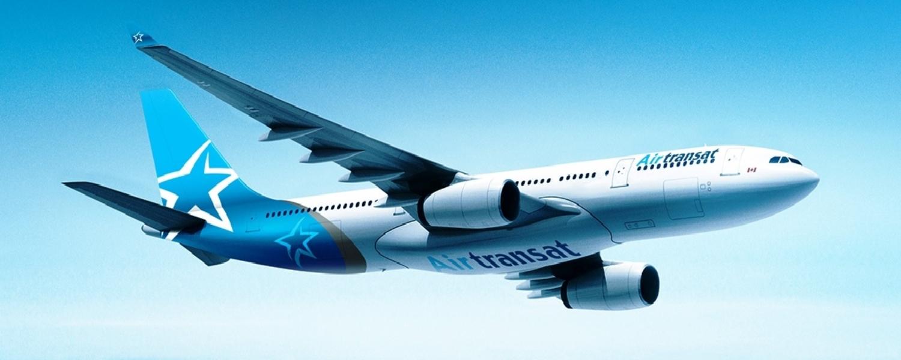
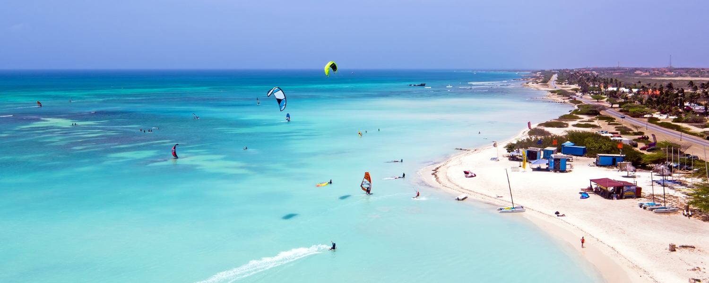
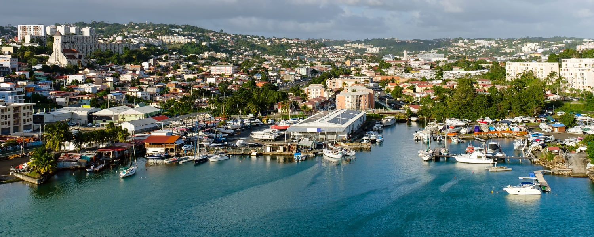
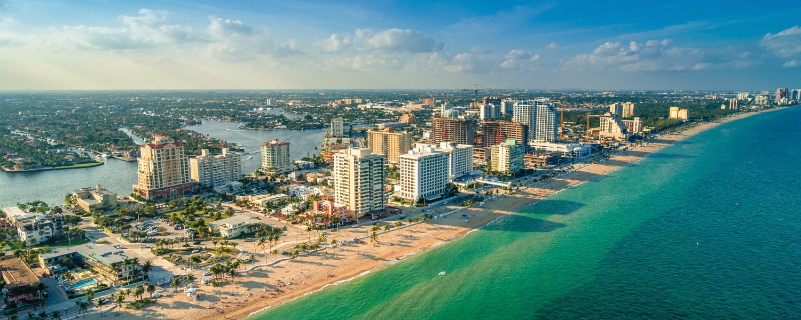

May 6, 2026
Flight DealsAir Transat Just Made Winter 2026-2027 Very Interesting

If you have been waiting for a sign to finally book that winter escape, consider this it. Air Transat has been rolling out its 2026-2027 winter program in waves over the past few weeks, and the picture taking shape is genuinely exciting for Canadian travellers, especially those flying out of Eastern Canada.
Between new Caribbean routes from Montreal, a first-ever non-stop to Costa Rica from Quebec City, year-round Europe from Toronto and Montreal, and Florida making its return, this is one of the more ambitious winters Air Transat has put together in a while. Here is the full breakdown.
Three New Routes from Montreal, and They Are Good Ones

The most recent announcement, dropped on April 27, adds three brand-new destinations flying direct from YUL starting in December 2026: Aruba, Barbados, and Los Cabos.
These are not filler routes. Aruba sits well outside the hurricane belt, making it a particularly smart winter pick. Barbados brings that distinct mix of British colonial charm and Caribbean warmth that keeps people coming back year after year. And Los Cabos, perched at the tip of Baja California, has quietly become one of Mexico's most sought-after destinations, appealing to everyone from resort-seekers to adventure travellers. All three routes are already bookable.
| Route | Frequency | Starts | |
|---|---|---|---|
| Montreal (YUL) → Aruba (AUA) | 1x / week | Dec 12, 2026 | New |
| Montreal (YUL) → Barbados (BGI) | 2x / week | Dec 13, 2026 | New |
| Montreal (YUL) → Los Cabos (SJD) | 1x / week | Dec 10, 2026 | New |
Quebec City Is Having a Moment
One of the more underrated parts of this expansion is how much love Quebec City is getting. Air Transat is adding a non-stop route from YQB to San José, Costa Rica, starting December 15. That is a genuinely big deal for travellers in the Quebec City region who have historically had to connect through Montreal or Toronto to reach Central America.
On top of that, frequencies to Fort-de-France in Martinique are going up to two flights per week, Cancún gets bumped to eight weekly flights at peak season, and the Quebec City to Nantes route is being extended through the holiday period. Air Transat is clearly leaning into its position as the dominant carrier at Jean Lesage, and travellers there are benefitting.
| Route | Frequency | Starts | |
|---|---|---|---|
| Quebec City (YQB) → Costa Rica (SJO) | 1x / week | Dec 15, 2026 | New |
| Quebec City (YQB) → Fort-de-France (FDF) | 2x / week | — | +1 freq. |
| Quebec City (YQB) → Cancún (CUN) | 8x / week | — | +1 freq. |
| Quebec City (YQB) → Nantes (NTE) | 1x / week | Dec 16 – Jan 13 | Extended |
Toronto and Montreal Get Year-Round Europe
This one is for the travellers who have always wanted to do Paris in November or Barcelona in February. The Toronto to Paris and Montreal to Barcelona routes, which have historically been summer-only, are now going year-round.
Shoulder season Europe is genuinely one of travel's best-kept secrets. Fewer crowds, lower prices on the ground, and an atmosphere that feels completely different from the summer rush. Having direct options from Canada during those months removes a big barrier that has historically pushed people onto connections through other hubs.
| Route | Peak frequency | Starts | |
|---|---|---|---|
| Toronto (YYZ) → Paris (CDG) | 4x / week | Oct 25, 2026 | Year-round |
| Montreal (YUL) → Barcelona (BCN) | 2x / week | Oct 27, 2026 | Year-round |
New Connections from Smaller Airports + An Exciting Route from Toronto

Charlottetown, PEI and London, Ontario are also getting new sun routes this winter. For travellers in those cities, avoiding a connection to a major hub to start a beach vacation is a meaningful quality-of-life improvement. Toronto, while not a small city, gets a shoutout for picking up an exclusive new route to Fort-de-France, Martinique — a destination that has been growing fast and is now available seasonally from YYZ for the first time.
| Route | Frequency | Starts | |
|---|---|---|---|
| Toronto (YYZ) → Fort-de-France (FDF) | 2x / week | Dec 19, 2026 | New |
| London ON (YXU) → Puerto Plata (POP) | 1x / week | Dec 15, 2026 | New |
| Charlottetown (YYG) → Punta Cana (PUJ) | 1x / week | Dec 16, 2026 | New |
Florida Is Back

After a pause during the summer season, Fort Lauderdale returns to the winter schedule with serious frequency. Montreal gets up to seven weekly flights, Quebec City gets three, and Halifax gets a weekly departure starting mid-December.
Whether you are visiting family, doing a theme park trip, or just after some sunshine, these routes will help you get there more easily.
| Route | Frequency | Starts | |
|---|---|---|---|
| Montreal (YUL) → Fort Lauderdale (FLL) | 7x / week | Nov 16, 2026 | Returns |
| Quebec City (YQB) → Fort Lauderdale (FLL) | 3x / week | Nov 15, 2026 | Returns |
| Halifax (YHZ) → Fort Lauderdale (FLL) | 1x / week | Dec 16, 2026 | Returns |
The Bottom Line
What Air Transat is doing here feels like a coherent strategy rather than a patchwork of announcements. They are deepening their roots in Eastern Canada, adding variety on the Caribbean and European sides, and quietly building out a year-round transatlantic presence. More announcements are still coming to complete the winter program, so this likely is not the full picture yet.
If you are the type who plans ahead, now is the time to be watching. The early routes are already bookable, the schedule is taking shape, and winter 2026-2027 is shaping up to be one of the more interesting seasons Air Transat has put together in a while.
Happy travels!